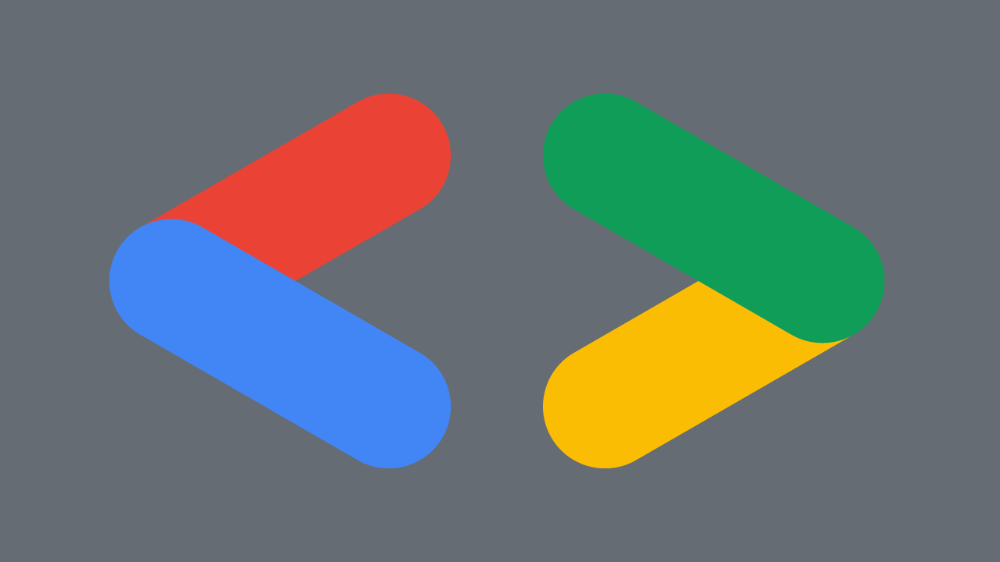

A Celebration of North East Creative Tech with Google DevFest
This article was originally published 12th December 2022 on Linkedin
Google Developer Student Clubs
Aaron and Allaida spoke about Google Developer Student Clubs which are communities for helping grow knowledge and build solutions in the community. Empower students and bridge gap between theory and practice for student developers. GDSC are all over the world and there was a Google Developers Community Summit in London. Durham one is is Durham University CompSoc where hope to share skills and aim to promote programming including Workshops and Talks along with meetups and more. Also there is Durhack which is one of the biggest hackathons and people get together to build something new in 23 hours. Also have DUWit which is Durham University Women in Tech and supports many different students from a wide range of subjects and hold workshops, CV workshops and mentorship scheme and work with Sue Black. They run events in collaboration and hear from companies including challenges and how got into tech. Also part of GitHub Campus Experts which is similar to GDSC which helps build diverse and inclusive spaces to get involved and they also bring in existing communities and help them.
Barclays Eagle Labs
David Gowans who Barclays Games & Creative Team was next to speak about how Games are supported by Barclays. They see the positive impact that Games can have. Globally gamed is worth over $200 billion. Biggest business transactions is Microsoft acquisition of Activision Blizzard King. Barclays support industries of all different types but never had a dedicated team for Games until recently, but it is a massive industry so they need to provide good services for the Games industry. There has been a skyrocket of growth, there are new services and people still keep playing games and it continues to have more spend and investment. Creative industry led by people passionate about the sector, innovations in other industries are born out of the gaming sector. Trends that shape the industry include Mobile, Cloud, Tech, Free to Play, Subscriptions and Mature Development Platforms. Fortnight has developers that come from the North East. Among US IP licensing is dealt with by company in North East. Innovations include AI, Simulation Engines, Metaverse, VR, Micropayments and Online Platforms. Metaverse is intended to emulate the real world where can have a virtual identity. Games continue to dominate as a growth industry such as on mobile. There isn't enough people to fill the positions available. Can visit games.barclays for more. They run UK industry programmes that can help games developers and companies. They are grown their network and want to grow location in Newcastle for more gaming focused support.
Newcastle United Foundation
Newcastle United Foundation talked about Digitech / STEM. They are official charity of Newcastle United to engage with people in the community. They have only recently engaged with tech with their "Nucastle" building and been able to implement Tech and esports. They engage with business community to attend events and engage with people and create experiences with 150 businesses supporting them. They have multipurpose spaces and have interactive STEM learning space and is to engage young people in an interactive way such as with Sphero to play football and score goals but it is all hands-on where schools don't have access to this kind of kit. They also have VR headsets and have partnered with companies such as LNER call centre and can find out about job or driving a train so gives opportunity to try out different things using VR with no charge for the school. They also have an esports room, they repurposed one of the classrooms for this and help students including getting into esports and university and also has modules for hardware, graphic design and more but also have sport education element. There is also work about branding for an esports team. Also gives access to hardware and software to allow those living locally for young people to play games in the evening there. They also invested in software to manage games and have age filtering, control camera, chat and features on games and don't need own account for games themselves. They also have competitive gaming and will have professional games under Newcastle United brand. They also do birthday parties for the building and can do gaming and football or any combination. They also use their connections with businesses to allow young people to learn about topics such as cyber security. They also have ran events where had stands with something interactive such as Balfour Beatty with Spot from Boston Dynamics. They will also have Hado which is AR dodgeball which is 80 seconds per game but gets people moving and involved with technology to help get more young people engaged in Tech and will be first place North of Coventry with this game. The "Nucastle" building is on Diana Street 5 mins from St James's Park just at the at back of the Helix site.
BBC
Bill Thompson is based in Cambridge and is part of Technology and Product Group. They do future value research, things that are not just about Radio and Television. They have plans for North East in Newcastle. BBC started 100 years ago, 1922 was when first broadcast in Newcastle but now based in Broadcasting Centre in Barrack Road. There is TV production team and we'll know TV television programmes in the past such as Byker Grove. Decision was made to invest there and create The North East Technology Hub and will have 70 staff by end of 2023. Will update office to more modern, welcoming and friendly feel to office. They will have a Tardis in reception for storage. The ambition is to turn the BBC into a digital service used by everyone every day. They design, develop and deliver audience facing products and work effectively together and make it a more interesting place to work but in a hybrid way and will recruit new jobs not move people with eight or nine multidisciplinary development teams such as UX developers, project managers and more. Will be putting programmers together with program teams for content and will innovation on new products. Build the next generation of interactive services and develop innovative content the audiences want. They are keen on reaching out and doing more events and recruiting for the teams based in the North East and can find positions at careershub.bbc.co.uk.
Proto
Proto is now run as part of the Digital Catapult. They run immersive technology programmes such as boot camps and develop immersive virtual production but also have opportunities to access technology which would not be readily accessible. They also put together a performance with led volume along with full VR and sold out every performance of this experience that was held. They are working with the new arena that is being built on Gateshead Quays. Proto helps drive productive and opportunities across the North East. They work from fully enclosed VR environments through to AR which overlays digital information onto the real world. Immersive technology with spatial computing and can also integrate the sense of touch with haptic to help explore virtual worlds. VR is about presence and embodied interaction and can't be replicated with any other technologies and can also help save money such as providing digital interactive training environments and can have immersive training rooms for things like forklift truck training. There is no AR without scene understanding. Virtual production such as Stage Craft from Disney used in The Mandalorian which uses a games engine to create a virtual image with LED volume and motion tracking for cameras and can recreate environments in a studio. There is a 10 metre wide 3 metre high screen at Proto in Gateshead along with a smaller screen on wheels and can create real reflections from screen and this will be launched in the new year and allow smaller production companies to access this technology in the North East. They are also working with a studio in London and have remote studio using 5G and will be running open days in early February. They are using Unreal Engine but will also be looking into Unity as they are technology agnostic. There are two types of booking for R&D to help companies use it and become part of their process and will take commercial bookings as much of that is booked months and years in advance. Aim is to make it accessible to everyone particularly SMEs. It is funded and subsidised with 50% being R&D and will be creating case studies.